Pseudo-Clases
Se tratan de estilos CSS que se activan en base a los elementos que se desencadenen debido a la interacción del usuario, en su son muy similares a los pseudo-elementos, por supuesto con ciertas diferencias, Las diferentes pseudo-clases son:
Nota: Las pseudo clases se indican, con el selector del elemento seguido de dos puntos (:) y del nombre de la pesudo-clase
:hover
-
Se acciona cuando el raton se encuentra encima del elemento en cuestión, ese es el desencadenante de esta pseudo-clase, por lo tanto al cumplirse esta condición el elemento cambiara de estilos:
Ejemplo
Codigo
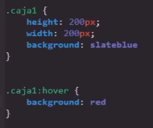
Elemento en Reposo
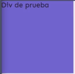
Se Acciona el Evento
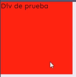
Nota: Esta pseudo-clase se puede emplear cualquier elemento a acepción de los pseudo-elementos.
Nota: En pantallas tactiles este evento funciona cuando se clickea, ya que no es posible pasar el raton por los elementos.
:link y :visited
-
En esta ocación se tratan de dos pseudo-clases complementrias entre si, la función de hambas consiste en modificar los estilos de una etiqueta "a", diferenciandose en que:
:link: Se activa cuando el elemento "a" posee un link que nunca haya sido visitado por el usuario, y a su vez se desactiva una vez este visita la paguina por primera vez
:visited: En este caso se activa cuando el elemento "a" posee un link que ya ha sido visitado con anterioridad por el usuario, y de aquí en más siempre se visualizara esta pseudo-clase mientras un registro de alguna visita a dicha dirección exista
En otras palabras "link" nos permite definir los estilos de aquellos enlaces en los que el usuario no haya accedido, mientras que "visited" nos permite aplicar otros estilos una vez esta dirección es visitada.
Nota: Sobra decir que estas pseudo-clases unicamente funcionan sobre elementos "a".
Nota: Una partucularidad de estas dos pesudo-clases es que si se aplica ciertos atributos en una de ellas puede que estos tambien se manifiesten en la otra, tal y como ocurre con padding, por que existe cierta relación entre estas.
Ejemplos
:link
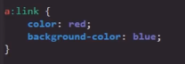
:visited
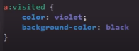
:active
-
En este caso la pseudo-clase se activa en los momentos que se mantenga el clic sobre el elemento, de ese modo estando inactiva antes y despues de que se realise el clic.
Nota: Esta pseudo-clase funciona en todos los elementos.
Ejemplo
Codigo
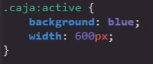
Elemento en Reposo
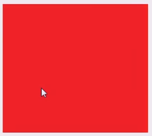
Evento activo (manteniendo el clic)
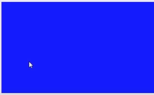
:focus
-
Esta pesudo-clases funciona unicamente en los elementos "input", y su función es la de aplicar estilos al momento de que el input tanga el enfoque del navegador, es decir al mometo de que el input sea seleccionado se activa esta pseudo-clase, desactivandose una vez el "input" pierde el enfoque.
Ejemplos
Codigo
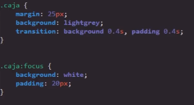
Elemento en Reposo
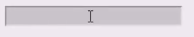
Elemento seleccionado
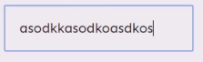
:lang()
-
Esta peseudo-clase no es acionada en si por ningun evento, en su lugar es una función en la que se puede aplicar estilos a un elemento en base al lenguaje en el que este se encuentre, para esto se hace lo siguite:
-
Se define el lenguaje del elemento HTML, esto se hace usando el atributo lang dentro de este
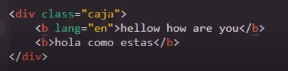
-
Luego se define la pseudo-clase en CSS, ingresando el lengueje al que se le aplicara el estilo
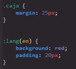
Resultado
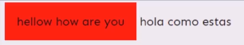
Nota: Esto funciona similar a un selector de atributo.
Nota: Actualmente el uso de lang es bastante bajo.
Extra:
En CSS tambien es posible mificar los estilos de un elemento o clase cuando se desencadena un evento en otro, en CSS este tipo de declaración se aplica de la siguite forma:
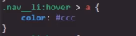
En este ejemplo se declara que cuando el raton se posicione encima del elemento con la clase .nav_li se modifiquen los estilos del elemento "a".